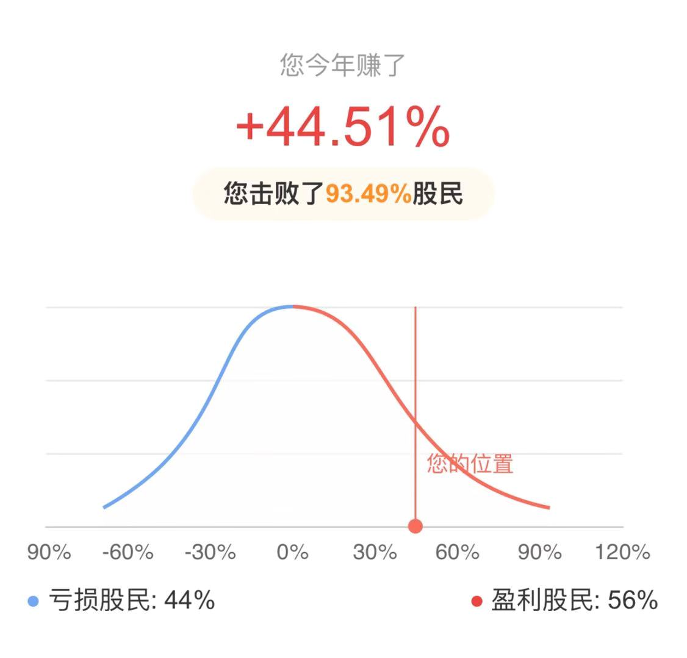
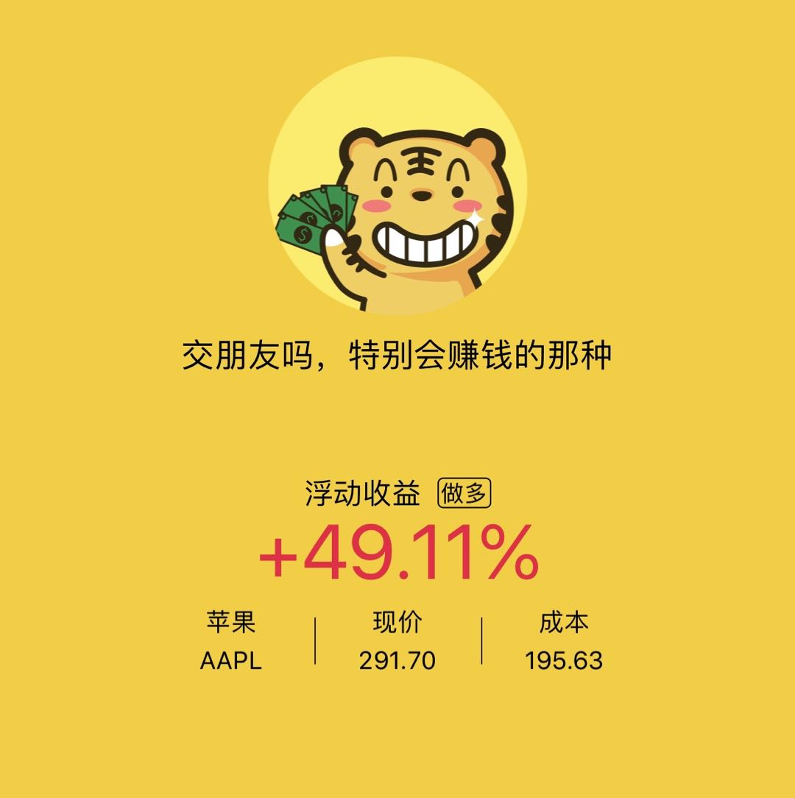
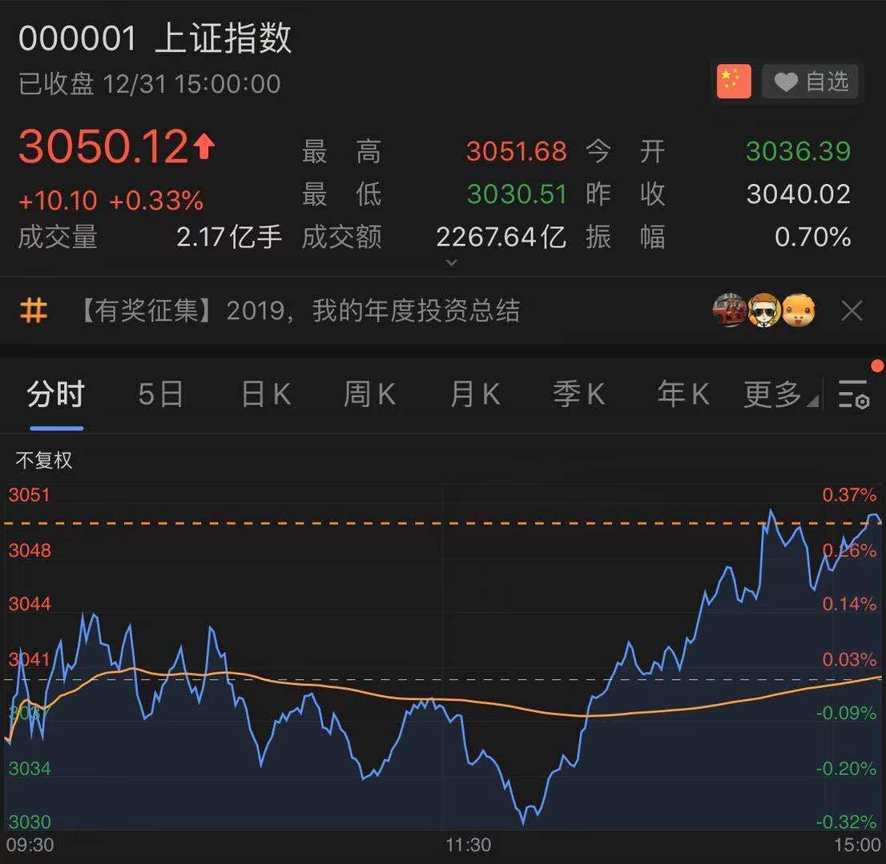
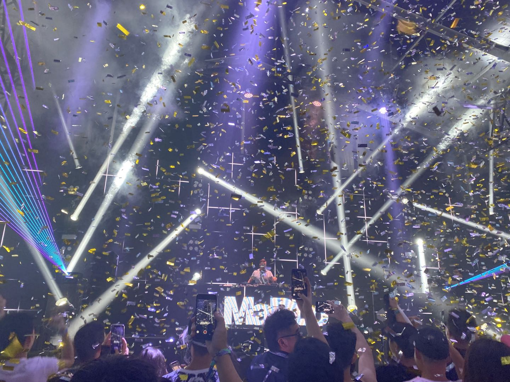
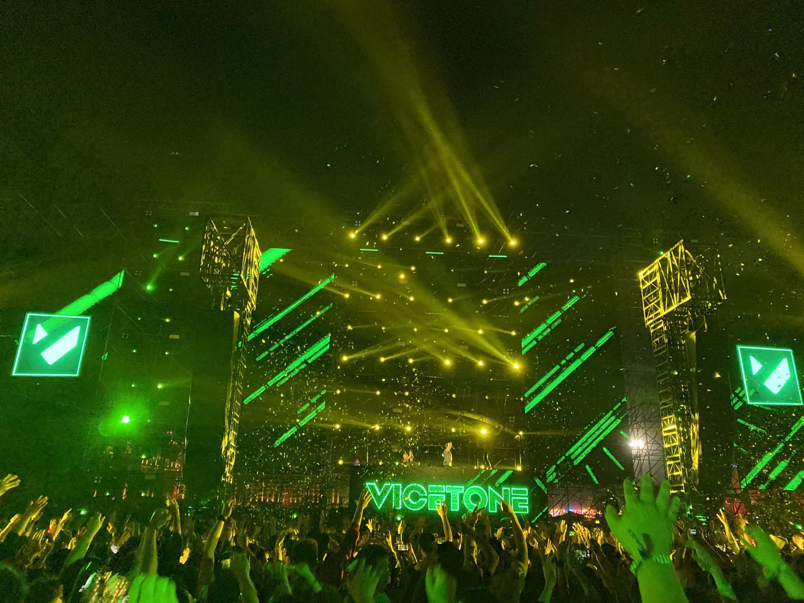
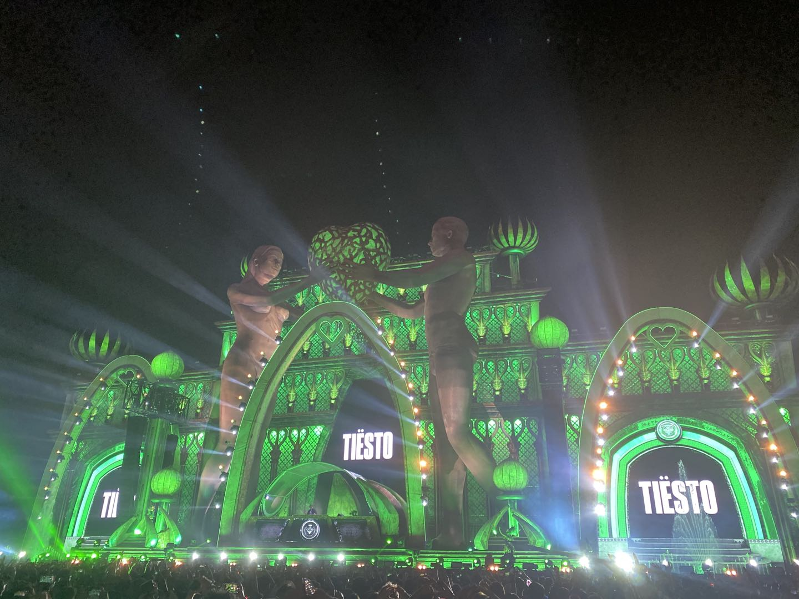

<!DOCTYPE html>
<html lang="zh-CN">

<head>
    <meta charset="utf-8">
    <meta name="viewport" content="width=device-width, initial-scale=1">
    <meta name="robots" content="noodp" />
    <title class="pjax-title">再见2019，你好2020 - 跨界Coder</title><meta name="Description" content=""><meta property="og:title" content="再见2019，你好2020" />
<meta property="og:description" content="
不知不觉又到年底了，临近年底大家都忙着总结2019年发生的大事儿，比如前端2019年发生了哪些大事儿，投资界2019年发生了哪些事情让大家惊讶，DJ们也忙着制作并推出 Year Mix 2019。我从2016年开始，在每年的年底都会写一篇年底总结文章，回头看看这一年对我来说重要的事情，这一年我又学到了哪些，有哪些成长，今年也不例外&hellip;
" />
<meta property="og:type" content="article" />
<meta property="og:url" content="https://mrzhang123.github.io/posts/2019-2020newyear/" /><meta property="og:image" content="https://mrzhang123.github.io/logo.png"/><meta property="article:section" content="posts" />
<meta property="article:published_time" content="2019-12-31T02:00:25+00:00" />
<meta property="article:modified_time" content="2019-12-31T02:00:25+00:00" />

<meta name="twitter:card" content="summary_large_image"/>
<meta name="twitter:image" content="https://mrzhang123.github.io/logo.png"/>

<meta name="twitter:title" content="再见2019，你好2020"/>
<meta name="twitter:description" content="
不知不觉又到年底了，临近年底大家都忙着总结2019年发生的大事儿，比如前端2019年发生了哪些大事儿，投资界2019年发生了哪些事情让大家惊讶，DJ们也忙着制作并推出 Year Mix 2019。我从2016年开始，在每年的年底都会写一篇年底总结文章，回头看看这一年对我来说重要的事情，这一年我又学到了哪些，有哪些成长，今年也不例外&hellip;
"/>
<meta name="application-name" content="跨界Coder">
<meta name="apple-mobile-web-app-title" content="跨界Coder">

<meta name="theme-color" content="#ffffff"><link rel="shortcut icon" type="image/x-icon" href="/favicon.ico" />
        <link rel="icon" type="image/png" sizes="32x32" href="/favicon-32x32.png">
        <link rel="icon" type="image/png" sizes="16x16" href="/favicon-16x16.png"><link rel="apple-touch-icon" sizes="180x180" href="/apple-touch-icon.png"><link rel="canonical" href="https://mrzhang123.github.io/posts/2019-2020newyear/" /><link rel="prev" href="https://mrzhang123.github.io/posts/2019-optional-chaining/" /><link rel="next" href="https://mrzhang123.github.io/posts/2020_this_is_okr/" /><link rel="stylesheet" href="/lib/normalize/normalize.min.css"><link rel="stylesheet" href="/css/style.min.css"><link rel="preload" as="style" onload="this.onload=null;this.rel='stylesheet'" href="/lib/fontawesome-free/all.min.css">
    <noscript><link rel="stylesheet" href="/lib/fontawesome-free/all.min.css"></noscript><link rel="preload" as="style" onload="this.onload=null;this.rel='stylesheet'" href="/lib/animate/animate.min.css">
    <noscript><link rel="stylesheet" href="/lib/animate/animate.min.css"></noscript><script type="application/ld+json">
    {
        "@context": "http://schema.org",
        "@type": "BlogPosting",
        "headline": "再见2019，你好2020",
        "inLanguage": "zh-CN",
        "mainEntityOfPage": {
            "@type": "WebPage",
            "@id": "https:\/\/mrzhang123.github.io\/posts\/2019-2020newyear\/"
        },"genre": "posts","keywords": "年终总结","wordcount":  5592 ,
        "url": "https:\/\/mrzhang123.github.io\/posts\/2019-2020newyear\/","datePublished": "2019-12-31T02:00:25+00:00","dateModified": "2019-12-31T02:00:25+00:00","publisher": {
            "@type": "Organization",
            "name": "跨界Coder"},"author": {
                "@type": "Person",
                "name": "跨界Coder"
            },"description": ""
    }
    </script></head>

<body header-desktop="fixed" header-mobile="auto"><script type="text/javascript">
        function setTheme(theme) {document.body.setAttribute('theme', theme);}
        function saveTheme(theme) {window.localStorage && localStorage.setItem('theme', theme);}
        function getMeta(metaName) {const metas = document.getElementsByTagName('meta'); for (let i = 0; i < metas.length; i++) if (metas[i].getAttribute('name') === metaName) return metas[i]; return '';}
        if (window.localStorage && localStorage.getItem('theme')) {let theme = localStorage.getItem('theme');theme === 'light' || theme === 'dark' || theme === 'black' ? setTheme(theme) : (window.matchMedia && window.matchMedia('(prefers-color-scheme: dark)').matches ? setTheme('dark') : setTheme('light')); } else { if ('auto' === 'light' || 'auto' === 'dark' || 'auto' === 'black') setTheme('auto'), saveTheme('auto'); else saveTheme('auto'), window.matchMedia && window.matchMedia('(prefers-color-scheme: dark)').matches ? setTheme('dark') : setTheme('light');}
        let themeColorMeta = getMeta('theme-color');
        if (document.body.getAttribute('theme') != 'light') themeColorMeta.content = '#000000';
    </script>
    <div id="back-to-top"></div>
    <div id="mask"></div><div class="wrapper"><header class="desktop" id="header-desktop">
    <div class="header-wrapper">
        <div class="header-title">
            <a href="/" title="跨界Coder"><span id="id-1" class="typeit"></span></a>
        </div>
        <div class="menu">
            <div class="menu-inner"><a class="menu-item" href="/posts/"> 文章 </a><a class="menu-item" href="/tags/"> 标签 </a><a class="menu-item" href="/categories/"> 分类 </a><span class="menu-item delimiter"></span><span class="menu-item search" id="search-desktop">
                        <input type="text" placeholder="请输入关键词进行搜索" id="search-input-desktop">
                        <a href="#" onclick="return false;" class="search-button search-toggle" id="search-toggle-desktop" title="搜索">
                            <i class="fas fa-search fa-fw"></i>
                        </a>
                        <a href="#" onclick="return false;" class="search-button search-clear" id="search-clear-desktop" title="清空">
                            <i class="fas fa-times-circle fa-fw"></i>
                        </a>
                        <span class="search-button search-loading" id="search-loading-desktop">
                            <i class="fas fa-spinner fa-fw fa-spin"></i>
                        </span>
                    </span><a href="#" onclick="return false;" class="menu-item theme-select" title="切换主题">
                    <i class="fas fa-adjust fa-fw"></i>
                    <select class="color-theme-select" id="theme-select-desktop" title="切换主题">
                        <option value="light">浅色</option>
                        <option value="dark">深色</option>
                        <option value="black">黑色</option>
                        <option value="auto">跟随系统</option>
                    </select>
                </a></div>
        </div>
    </div>
</header><header class="mobile" id="header-mobile">
    <div class="header-container">
        <div class="header-wrapper">
            <div class="header-title">
                <a href="/" title="跨界Coder"><span id="id-2" class="typeit"></span></a>
            </div>
            <div class="menu-toggle" id="menu-toggle-mobile">
                <span></span><span></span><span></span>
            </div>
        </div>
        <div class="menu" id="menu-mobile"><div class="search-wrapper">
                    <div class="search mobile" id="search-mobile">
                        <input type="text" placeholder="请输入关键词进行搜索" id="search-input-mobile">
                        <a href="#" onclick="return false;" class="search-button search-toggle" id="search-toggle-mobile" title="搜索">
                            <i class="fas fa-search fa-fw"></i>
                        </a>
                        <a href="#" onclick="return false;" class="search-button search-clear" id="search-clear-mobile" title="清空">
                            <i class="fas fa-times-circle fa-fw"></i>
                        </a>
                        <span class="search-button search-loading" id="search-loading-mobile">
                            <i class="fas fa-spinner fa-fw fa-spin"></i>
                        </span>
                    </div>
                    <a href="#" onclick="return false;" class="search-cancel" id="search-cancel-mobile">
                        取消
                    </a>
                </div><a class="menu-item" href="/posts/" title="">文章</a><a class="menu-item" href="/tags/" title="">标签</a><a class="menu-item" href="/categories/" title="">分类</a><a href="#" onclick="return false;" class="menu-item theme-select" title="切换主题">
                <i class="fas fa-adjust fa-fw"></i>
                <select class="color-theme-select" id="theme-select-mobile" title="切换主题">
                    <option value="light">浅色</option>
                    <option value="dark">深色</option>
                    <option value="black">黑色</option>
                    <option value="auto">跟随系统</option>
                </select>
            </a></div>
    </div>
</header>
<div class="search-dropdown desktop">
    <div id="search-dropdown-desktop"></div>
</div>
<div class="search-dropdown mobile">
    <div id="search-dropdown-mobile"></div>
</div>
<main class="main">
            <div class="container"><div class="toc" id="toc-auto">
        <h2 class="toc-title">目录</h2>
        <div class="toc-content always-active" id="toc-content-auto"></div>
    </div><script>document.getElementsByTagName("main")[0].setAttribute("pageStyle", "wide")</script><script>document.getElementsByTagName("main")[0].setAttribute("autoTOC", "true")</script><article class="page single"><h1 class="single-title animate__animated animate__flipInX">再见2019，你好2020</h1><div class="post-meta">
            <div class="post-meta-line">
                <span class="post-author"><i class="author fas fa-user-circle fa-fw"></i><a href="/" title="Author" rel=" author" class="author">跨界Coder</a>
                </span>&nbsp;<span class="post-category">收录于 </span>&nbsp;<span class="post-category">类别 <a href="/categories/%E5%B9%B4%E7%BB%88%E6%80%BB%E7%BB%93/"><i class="far fa-folder fa-fw"></i>年终总结</a></span></div>
            <div class="post-meta-line"><i class="far fa-calendar-alt fa-fw"></i>&nbsp;<time datetime="2019-12-31">2019-12-31</time>&nbsp;<i class="far fa-edit fa-fw"></i>&nbsp;<time datetime="2019-12-31">2019-12-31</time>&nbsp;<i class="fas fa-pencil-alt fa-fw"></i>&nbsp;约 5592 字&nbsp;
                <i class="far fa-clock fa-fw"></i>&nbsp;预计阅读 12 分钟&nbsp;</div>
        </div><div class="featured-image"></div><div class="details toc" id="toc-static"  kept="">
                <div class="details-summary toc-title">
                    <span>目录</span>
                    <span><i class="details-icon fas fa-angle-right"></i></span>
                </div>
                <div class="details-content toc-content" id="toc-content-static"><nav id="TableOfContents">
  <ul>
    <li><a href="#工作">工作</a></li>
    <li><a href="#技术">技术</a>
      <ul>
        <li><a href="#熟练使用vim和tmux">熟练使用vim和tmux</a></li>
        <li><a href="#学习服务端的知识">学习服务端的知识</a></li>
        <li><a href="#几点遗憾">几点遗憾</a>
          <ul>
            <li><a href="#react源码学习">⚛️React源码学习</a></li>
            <li><a href="#算法的学习">算法的学习</a></li>
          </ul>
        </li>
      </ul>
    </li>
    <li><a href="#金融投资">金融、投资</a>
      <ul>
        <li><a href="#阅读了很多金融投资方面的书">阅读了很多金融投资方面的书</a></li>
        <li><a href="#学习经济金融学基础">学习经济、金融学基础</a></li>
        <li><a href="#学习阅读财报">学习阅读财报</a></li>
        <li><a href="#关于投资的总结">关于投资的总结</a></li>
      </ul>
    </li>
    <li><a href="#生活">生活</a>
      <ul>
        <li><a href="#带着女朋友去了一次edc">带着女朋友去了一次EDC</a></li>
        <li><a href="#阅读了更多的书籍">阅读了更多的书籍</a></li>
        <li><a href="#在生活中尝试使用okr给自己的计划做减法">在生活中尝试使用OKR，给自己的计划做减法</a></li>
        <li><a href="#遗憾的一点">遗憾的一点</a></li>
      </ul>
    </li>
    <li><a href="#展望2020">展望2020</a>
      <ul>
        <li><a href="#技术-1">技术</a></li>
        <li><a href="#生活-1">生活</a></li>
      </ul>
    </li>
  </ul>
</nav></div>
            </div><div class="content" id="content"><blockquote>
<p>不知不觉又到年底了，临近年底大家都忙着总结2019年发生的大事儿，比如前端2019年发生了哪些大事儿，投资界2019年发生了哪些事情让大家惊讶，DJ们也忙着制作并推出 Year Mix 2019。我从2016年开始，在每年的年底都会写一篇年底总结文章，回头看看这一年对我来说重要的事情，这一年我又学到了哪些，有哪些成长，今年也不例外&hellip;</p>
</blockquote>
<p>2019年总的来说，相对于提升前端技术，更多的是在其他技能以及思想意识方面的提升。</p>
<h2 id="工作">工作</h2>
<p>这一年，在工作方面的最重要事情就是 顺利转正，并且越来越适应新的环境，新的方式。🎉🎉🎉</p>
<p>2018年底的时候来到现在的公司，经过半年的试用期，终于在今年上半年转正了，转正过程也是一波三折，中间也经历了不太好的过程，但是好在最终的结果还是好的，最终还是转正了。虽然自己在来现在这家公司的时候就已经工作三年了，但是换了一个新的环境后，还是感觉不太适应，所以在刚来的时候表现的不是特别好，这也导致了后面转正的一些问题。</p>
<p>记得去年年底刚来的时候，真的是让我惊呆了，上午还在参加入职培训，下午就拉着我去参加需求会，于是我一脸懵逼的去听需求会，然后就自己熟悉项目。期间也参加过一些小的需求，但是也许是因为还在适应，所以导致了一些问题，也是比较尴尬。还有件比较尴尬的事情是自己虽然新入职，但是似乎并没有人去指导，带着熟悉一些规则，流程，或许是因为我工作三年了，觉得没必要吧，不知道了😂。之后还发生过一些不开心的事情，导致那段时间我非常紧张，总担心自己做不好，好在这一切都过去了，最终还是顺利通过，开心😁。</p>
<p>在这一年的工作中，相比于从工作中学到的技术，更多的是学到的团队配合；如何跟别人配合，如何跟进项目，如何保证一个项目的顺利进行等等。记得当初我刚工作的时候，关注的只有技术，我拿到需求后，关注的只有该怎么实现，能不能从中学到什么东西，能不能用新的技术实现它，其他的合作，进度什么的不会去想，<strong>在工作的这几年，渐渐的明白大家如何合作比单单是自己去想该怎么做要重要的多，相比于忙于自己事情，多抬头看看别人在做什么看看整个大局更重要</strong>，也许这就是成长吧。</p>
<h2 id="技术">技术</h2>
<p>关于技术方面的学习，今年似乎在前端方面学习的不太多，或者说在前端方面还是那些学习，比如React，Javascript等等，但是2019年跟往年不同的主要是开始注意到，要想称为一名合格的工程师，就不能只懂前端，而对后端一无所知，所以今年主要就是开始学习后端方面的知识。说到这里突然想起了<a href="https://zh.wikipedia.org/wiki/%E9%98%BF%E6%98%8E%C2%B7%E8%8C%83%C2%B7%E6%AF%94%E4%BC%A6" target="_blank" rel="noopener noreffer">Armin Van Burren（我最喜欢的DJ，Trance之神😁）</a>今年下半年给自己后面的的主题——Balance，也许对我来说也需要Balance，所以在今年开始有意识学习其他技术。</p>
<h3 id="熟练使用vim和tmux">熟练使用vim和tmux</h3>
<p>关于技术方面的提升，第一个就是<strong>熟练使用vim和tmux</strong>（当然只是使用，更深入的还有待学习）。</p>
<p>从今年开始，我开始全面使用vim+tmux提升效率，终于理解了为什么把vim称为“编辑器之神”，vim结合tmux在终端的使用，简直就是完美，效率真的是太高了，完全脱离鼠标的点击，在开发过程中再也不用点来点去了。虽然从<a href="https://2019.stateofjs.com/overview/" target="_blank" rel="noopener noreffer">The state of Javascript 2019</a>的调查结果看，在前端 / Javascript界 VS Code 是当之无愧的宇宙第一编辑器（第二是webstrom，第三是vim），但是在我的工作过程中，vim已经超越了VS Code，成为我的主力编辑器。关于vim的使用，后续我会专门写一篇文章介绍，关于tmux的使用可以查看文章：<a href="https://mrzhang123.github.io/blog/home/2019-tmux/" target="_blank" rel="noopener noreffer">终端复用神器Tmux</a>。</p>
<p>至于为什么放着好好的VS Code不用，要去用vim，我觉得是因为在现在的公司给配置的是笔记本+扩展屏，然后如果想用鼠标的话，就要用笔记本上的触摸板，很不方便，所以我就开始使用vim，让自己在开发过程中，可以减少鼠标的点击，当然这并不是我第一次开始使用vim，在此之前已经尝试过好几次使用vim，但是都因为实在是太难用了，完全是在降低开发效率而告终，这一次终于坚持下来并且成功了。</p>
<h3 id="学习服务端的知识">学习服务端的知识</h3>
<p>从今年下半年开始，自己开始利用工作之余的时间学习一些服务端的知识，选择的语言是go语言，至于为什么想学习服务端，为什么选择go语言，有几个原因：</p>
<ul>
<li>作为工程师，如果只懂前端不懂服务端，就好像造房子只有榫结构的材料，没有卯结构的材料，无法作出一个完整的成品，所以需要学习服务端，完善自己的技能体系，这样才能真正的做到不设边界，解决问题</li>
<li>个人觉得，想要理解计算机科学，就要去深入学习服务端的东西，不只是只知道前端</li>
<li>自己对go语言有莫名的好奇感而且go语言是一门相对来说比较年轻的语言</li>
<li>在公司中，服务端主要用go做开发，如果学会了，可以看看服务端的东西</li>
</ul>
<p>在零零散散的看了一些网上的课程和开源的go语言教程后，开始尝试着看go的项目，目前仍然在学习中。</p>
<h3 id="几点遗憾">几点遗憾</h3>
<p>今年看了不少书，渐渐的也明白一个道理并试着开始实践，给自己的计划做减法。人的精力是有限的，所以不要给自己规划太多事情，所以今年也舍弃了一些计划，不过这些计划在2020年会重新回到日程：</p>
<h4 id="react源码学习">⚛️React源码学习</h4>
<p>其实一直都想研究一下React源码的，<a href="https://reactjs.org/" target="_blank" rel="noopener noreffer">React</a>作为我工作中用的最多的前端框架，总觉得天天用而不理解原理实在是不合适，况且如果深入理解源码，对于遇到的一些问题也可以快速找到原因并拿出解决方案同时也可以避免一些坑，所以今年上半年有看过一些React源码，但是因为React源码真的是太复杂了，所以看了一部分之后就没有再研究，这一点比较遗憾。</p>
<h4 id="算法的学习">算法的学习</h4>
<p>今年下半年的时候，开始有意识的学习算法，在每天中午休息时间，看<a href="https://book.douban.com/subject/10432347/" target="_blank" rel="noopener noreffer">《算法》</a>这本书，同时周末的时候自己会总结一下，但是呢，看算法真的是太太太太太慢了，几天只看了那么几页，还不一定全都学会😭，所以后面实在看不下去了，就改看其他书了。也许算法也就像我当年使用vim，放弃了无数次，但是又一次又一次捡起来，最终称为我的利器。关于算法，在2020年依然会学习，但是我觉得我需要好好规划一下如何学习算法。</p>
<h2 id="金融投资">金融、投资</h2>
<p>2019年在学习金融、投资方面还是下了一些功夫的，主要有以下几点：</p>
<h3 id="阅读了很多金融投资方面的书">阅读了很多金融投资方面的书</h3>
<p>从2018年开始阅读到2019年，自己的阅读量比以前有了明显的提升，因为自己喜欢研究投资、金融，所以2019年读了很多（相比于读的其他类型的书而言）关于金融、投资的书，大概有下面这些：</p>
<ul>
<li><a href="https://book.douban.com/subject/25926542/" target="_blank" rel="noopener noreffer">《一本书读懂财报》</a></li>
<li><a href="https://book.douban.com/subject/30176774/" target="_blank" rel="noopener noreffer">《第一本经济学》</a></li>
<li><a href="https://book.douban.com/subject/30486499/" target="_blank" rel="noopener noreffer">《债务危机》</a></li>
<li><a href="https://book.douban.com/subject/30443502/" target="_blank" rel="noopener noreffer">《周期</a></li>
<li><a href="https://book.douban.com/subject/10799082/" target="_blank" rel="noopener noreffer">《投资最重要的事》</a></li>
<li><a href="https://book.douban.com/subject/5243775/" target="_blank" rel="noopener noreffer">《聪明的投资者》</a></li>
<li><a href="https://book.douban.com/subject/10797066/" target="_blank" rel="noopener noreffer">《在股市大崩溃前抛出的人》</a></li>
<li><a href="https://book.douban.com/subject/1033778/" target="_blank" rel="noopener noreffer">《富爸爸，穷爸爸》</a></li>
<li><a href="https://book.douban.com/subject/5382213/" target="_blank" rel="noopener noreffer">《股票大作手回忆录》</a></li>
<li><a href="https://book.douban.com/subject/4867656/" target="_blank" rel="noopener noreffer">《金融学》</a></li>
</ul>
<p>因为平时工作需要上班，所以一般读书的时间是中午的一个小时休息时间，有时候实在瞌睡的不行就来罐咖啡，就这样利用中午的时间读完了这些书，现在回想起来也是感觉很欣慰。</p>
<p>在这一年中，股市经历了大涨也经历了大跌，所以有人开玩笑说买A股就像坐过山车🎢，看着自己的资产下跌的时候，要说不慌那是假的，为了让自己的内心不因为上涨而洋洋自得，不因为下跌而过度悲伤，所以选择读一些大佬的书，像《富爸爸，穷爸爸》、《聪明的投资者》、《投资最重要的事》、《在股市大崩溃前抛出的人》，这些书让我的内心更加强大，不再害怕下跌。</p>
<p>在2019年中我个人觉得最好的书还是 瑞达里奥的《债务危机》，相比于他2018年的书《原则》，2019年出的《债务危机》是一本纯金融学读物，想读懂这本书，需要有一定的经济、金融学基础，幸亏我在读这本书之前在中国大学MOOC上学习了《金融学》的基础知识，不然真的看不懂（其实就算是学习了这个课程，我在看的过程中也是很难懂，第一部分看了三遍才有感觉😅，之后总结了一篇文章：<a href="https://mrzhang123.github.io/blog/home/2019-debtCrisisOverview/" target="_blank" rel="noopener noreffer">不可不知的债务危机</a>。</p>
<h3 id="学习经济金融学基础">学习经济、金融学基础</h3>
<p>因为自己本身不是金融专业出身，对很多金融、经济学概念都不太熟悉，所以在工作之于自己抽时间在中国大学MOOC上面学习<a href="https://www.icourse163.org/course/CUFE-21011" target="_blank" rel="noopener noreffer">金融学</a>，而且还买了相应的教材，本来想完整学习的，但是说实话，大学教材真的大学是教材，有些地方真的是为了考试而写的，像什么出现历史、意义这些对我来说确实用处不大，所以最后并没有全部学，挑了其中毕竟重要的部分学习了一下。与此同时也阅读了比较基础通俗的经济学读物《第一本经济学》，学完之后感觉还是挺有用的，至少一些基本的概念能懂了。但是后续要想深入理解，还是要多学习。</p>
<h3 id="学习阅读财报">学习阅读财报</h3>
<p>买股票本质上是买公司，所以阅读公司财报可以说是做投资的基础技能之一，之前一直都有想法学习阅读财报，但是因为还有其他事情要做所以一直没排上，直到今年11月份才把学习阅读财报列到计划中，本来是想看<a href="https://www.bilibili.com/video/av78596002?from=search&amp;seid=5035740561082018109" target="_blank" rel="noopener noreffer">肖星老师的《财务分析》</a>学习，但是10个小时的视频确实有点儿慢，所以买了配套的教材——<a href="https://book.douban.com/subject/25926542/" target="_blank" rel="noopener noreffer">《一本书读懂财报》</a>。</p>
<p>说实话《一本书读懂财报》这本书是真心不错，里面关于财务三大报表的概念、含义以及财务分析方法有很详细的讲解，所以这本书可以说是我把它当教材上学时候的课本来读，认认真真的在笔记本上做了笔记，目前这本书快看完了，后续会总结一下发出来。</p>
<h3 id="关于投资的总结">关于投资的总结</h3>
<p>2018年末，我买入人生中第一支股票，到现在投资整整满一年。</p>
<p>A股方面，因为在2018年年底A股大跌的时候，买入龙头消费和银行，所以这一年在A股的投资收益率还是可以的，比较后悔的一件事儿是当时<a href="https://xueqiu.com/S/SH600519" target="_blank" rel="noopener noreffer">贵州茅台(SH:600519)</a>才500多一股，但是因为自己没那么多钱而且害怕再次跌所以没有买入，如今一年过去了，贵州茅台涨到了¥1185.80，实在是可惜，不过自己一直持有<a href="https://xueqiu.com/S/SZ399997" target="_blank" rel="noopener noreffer">中证白酒(SZ:399997)</a>的基金，所以也算是分了杯羹吧。😁</p>
<p>港美股方面，今年上半年买入的美股<a href="https://xueqiu.com/S/AAPL" target="_blank" rel="noopener noreffer">苹果(NASDAQ:AAPL)</a>也给我带来了不错的收益，但是在港股上市的老东家<a href="https://xueqiu.com/S/01810" target="_blank" rel="noopener noreffer">小米集团-W(HK:01810)</a>虽然年底的时候从8块一路上升到10块，但是依然让我亏损惨重，计划2020年再买入一波，期待2020年可以继续上涨。</p>
<p>总体来说2019年投资收益我个人还是比较满意的，期待在2020年自己可以学会财报分析，分析跟多行业，买入更多便宜的股票。</p>
<p></p>
<p></p>
<p></p>
<h2 id="生活">生活</h2>
<p>2019年在生活方面比较开心的有这么几点吧：</p>
<h3 id="带着女朋友去了一次edc">带着女朋友去了一次EDC</h3>
<p>今年最开心的一件事情就是带着女朋友参加了11月23，11月24日在珠海长隆举办的EDC电音节。记得上次去还是2017年，自己一个人从北京跑到上海参加在中国举办的第一届Ultra China，那时候就想将来我一定要带着女朋友来一起参加，如今两年过去了，我的梦想着终于实现了，这一次我不再是一个人😭❤️</p>
<!--EDC的图6张-->
<p>



</p>
<h3 id="阅读了更多的书籍">阅读了更多的书籍</h3>
<p>2019年相比于2018年读了更多的书，除了上面提到过的金融、投资类书籍，还有其他方面的：</p>
<ul>
<li><a href="https://book.douban.com/subject/30396635/" target="_blank" rel="noopener noreffer">《这就是OKR》</a></li>
<li><a href="https://book.douban.com/subject/1012611/" target="_blank" rel="noopener noreffer">《乌合之众》</a></li>
<li><a href="https://book.douban.com/subject/30144978/" target="_blank" rel="noopener noreffer">《见识》</a></li>
<li><a href="https://book.douban.com/subject/4929897/" target="_blank" rel="noopener noreffer">《情商》</a></li>
<li><a href="https://book.douban.com/subject/26178426/" target="_blank" rel="noopener noreffer">《稀缺》</a></li>
</ul>
<p>果然还是金融投资类的书籍多😂。</p>
<h3 id="在生活中尝试使用okr给自己的计划做减法">在生活中尝试使用OKR，给自己的计划做减法</h3>
<p>今年下半年，因为阅读了吴军老师的《见识》，在书中他提到关于他使用OKR管理自己的规划，同时也因为在平时工作中每个双周都要求填写自己的OKR，所以在阅读完《见识》之后又进一步阅读了《这就是OKR》去深入了解OKR是什么，如何使用。</p>
<p>从今年的9月份开始也按照公司的那种模式给自己设置了双月OKR，但是两个双月下来发现实行的不太好，很多都没有完成，我觉得没有完成的主要原因有以下两点：</p>
<ul>
<li>目标还是太多了，需要再减少一些，毕竟<strong>人的精力是有限的，要专注于那些对自己来说最重要的事情</strong>（<strong>注</strong>：这一点在吴军老师的《见识》中有提到，同时巴菲特也在自己的时间管理哲学中提到过（参考文章：<a href="https://mp.weixin.qq.com/s/Nn6ihKOiRSRHcK7w7ilUNQ" target="_blank" rel="noopener noreffer">巴菲特超越大部分人的地方，在于时间管理</a>）</li>
<li>对于我来说毕竟还是以上班为主，工作占据了我主要的时间，主要精力，而我的目标又不是那么容易完成，所以应该调整OKR的周期，计划从双月改为季度，这样在定了目标之后或许更容易实现</li>
</ul>
<h3 id="遗憾的一点">遗憾的一点</h3>
<p>今年最最最遗憾的就是体重没有减下去，在双月OKR中，都定了要减肥，但是始终没有实现😔，眼看着马上就快过年了，必须在年前减肥，不然的话过完年回来，更是胖的不能看了，之前减肥成功就是晚上不吃饭加锻炼，现在已经再次开启这个模式，期望在过年之前体重可以下来😭</p>
<h2 id="展望2020">展望2020</h2>
<p>2019年马上就要过去了，回望2019年，就我个人来说，还是有成长的，又是学习新技术，又是学习投资而且开始使用更加科学的方式规划自己的计划，为什么自己要折腾这些，我想总的来说就是想了解这个世界，不希望平平凡凡的过一生吧。</p>
<p>2020年马上就要到了，新的一年里我会继续2019年没有完成的计划</p>
<ul>
<li>学习golang，然后可以在项目中实践</li>
<li>学习React源码</li>
<li>学习算法</li>
<li>学习阅读财报，把《一本书读懂财报》读完并总结，然后开始尝试着分析财报</li>
<li>减肥，减肥，减肥！！！</li>
</ul>
<p>同时在新的一年里，也有新的期望，期望在2020年可以学习一些新的技术</p>
<h3 id="技术-1">技术</h3>
<ul>
<li>希望（或者说必须）在2020年<strong>学习并熟练使用Typescript</strong>：如今有一半以上的项目都是使用Typescript写的，可以说Typescript已经变成了必备技能，但是这个技能我还没学会，所以在2020年要加油把ts学会</li>
<li><strong>学会使用GraphQL</strong>：从2019年JavaScript调查报告看，GraphQL已经成为开发者们最期望学习的技术，与此同时在2019年越来越多的项目落地了GraphQL，想必将来应用会越来越多，所以学习这个也是必须的</li>
<li><strong>学习SQL</strong>：之前在工作中不需要接触SQL，所以会不会无所谓，但是现在在公司开始接触数据库，所以如果自己会写SQL，查数据日志的时候还是很方便的，期望在2020年可以学会SQL的使用</li>
<li><strong>学习Linux</strong>：虽然是前端，但是每天都在接触命令行，同时自己用vim+tmux写代码也驱使了对linux系统的好奇，2020年可以学习一波</li>
</ul>
<h3 id="生活-1">生活</h3>
<ul>
<li><strong>阅读更多的书</strong>：2020年，期望可以阅读更多类型的书籍，比如哲学，历史等等</li>
<li><strong>带着女朋友去ISY跨年</strong>：2019年参加了DEC，期望在2020年，可以带着女朋友去ISY跨年到2021😄</li>
</ul>
<p>最后，贴一个<a href="https://music.163.com/#/program?id=2064536847" target="_blank" rel="noopener noreffer">Armin的A State of Trance Year Mix 2019</a>作为结束，祝大家新年快乐。</p>
<p><em>2019年12月31日凌晨</em></p></div><div class="post-footer" id="post-footer">
    <div class="post-info">
        <div class="post-info-line">
            <div class="post-info-mod">
                <span>更新于 2019-12-31</span>
            </div>
            <div class="post-info-license"></div>
        </div>
        <div class="post-info-line">
            <div class="post-info-md"></div>
            <div class="post-info-share">
                <span></span>
            </div>
        </div>
    </div>

    <div class="post-info-more">
        <section class="post-tags"><i class="fas fa-tags fa-fw"></i>&nbsp;<a href="/tags/%E5%B9%B4%E7%BB%88%E6%80%BB%E7%BB%93/">年终总结</a></section>
        <section>
            <span><a href="#" onclick="window.history.back();">返回</a></span>&nbsp;|&nbsp;<span><a href="/">主页</a></span>
        </section>
    </div>

    <div class="post-nav"><a href="/posts/2019-optional-chaining/" class="prev" rel="prev" title="「译」JS新特性“可选链式调用”"><i class="fas fa-angle-left fa-fw"></i>「译」JS新特性“可选链式调用”</a>
            <a href="/posts/2020_this_is_okr/" class="next" rel="next" title="《这就是OKR》读书笔记">《这就是OKR》读书笔记<i class="fas fa-angle-right fa-fw"></i></a></div>
</div>
</article></div>
        </main><footer class="footer">
        <div class="footer-container"><div class="footer-line">由 <a href="https://gohugo.io/" target="_blank" rel="noopener noreffer" title="Hugo 0.88.1">Hugo</a> 强力驱动 | 主题 - <a href="https://github.com/HEIGE-PCloud/DoIt" target="_blank" rel="noopener noreffer" title="DoIt 0.2.10"><i class="far fa-edit fa-fw"></i> DoIt</a>
                </div><div class="footer-line"><i class="far fa-copyright fa-fw"></i><span itemprop="copyrightYear">2021</span><span class="author" itemprop="copyrightHolder">&nbsp;<a href="/" target="_blank" rel="noopener noreferrer">跨界Coder</a></span>&nbsp;|&nbsp;<span class="license"><a rel="license external nofollow noopener noreffer" href="https://creativecommons.org/licenses/by-nc/4.0/" target="_blank">CC BY-NC 4.0</a></span></div>
        </div></footer></div>

    <div id="fixed-buttons"><a href="#back-to-top" id="back-to-top-button" class="fixed-button" title="回到顶部">
            <i class="fas fa-arrow-up fa-fw"></i>
        </a><a href="#" id="view-comments" class="fixed-button" title="查看评论">
            <i class="fas fa-comment fa-fw"></i>
        </a>
    </div><div class="assets"><script type="text/javascript" src="/lib/autocomplete/autocomplete.min.js"></script><script type="text/javascript" src="/lib/fuse/fuse.min.js"></script><script type="text/javascript" src="/lib/lazysizes/lazysizes.min.js"></script><script type="text/javascript" src="/lib/topbar/topbar.min.js"></script><script type="text/javascript" src="/lib/pjax/pjax.min.js"></script><script type="text/javascript" src="/js/theme.min.js"></script></div>

<div class="pjax-assets"><script type="text/javascript" src="/lib/clipboard/clipboard.min.js"></script><script type="text/javascript" src="/lib/typeit/typeit.min.js"></script><script type="text/javascript" src="/lib/katex/katex.min.js"></script><script type="text/javascript" src="/lib/katex/auto-render.min.js"></script><script type="text/javascript" src="/lib/katex/copy-tex.min.js"></script><script type="text/javascript" src="/lib/katex/mhchem.min.js"></script><script type="text/javascript">window.config={"code":{"copyTitle":"复制到剪贴板","maxShownLines":10},"comment":{},"data":{"id-1":"跨界Coder's Blog","id-2":"跨界Coder's Blog"},"math":{"delimiters":[{"display":true,"left":"$$","right":"$$"},{"display":true,"left":"\\[","right":"\\]"},{"display":false,"left":"$","right":"$"},{"display":false,"left":"\\(","right":"\\)"}],"strict":false},"search":{"distance":100,"findAllMatches":false,"fuseIndexURL":"/index.json","highlightTag":"em","ignoreFieldNorm":false,"ignoreLocation":false,"isCaseSensitive":false,"location":0,"maxResultLength":10,"minMatchCharLength":2,"noResultsFound":"没有找到结果","snippetLength":50,"threshold":0.3,"type":"fuse","useExtendedSearch":false},"typeit":{"cursorChar":null,"cursorSpeed":null,"data":{"id-1":["id-1"],"id-2":["id-2"]},"duration":null,"speed":null}};</script><link rel="stylesheet" href="/lib/katex/katex.min.css"><link rel="stylesheet" href="/lib/katex/copy-tex.min.css"></div>
</body>

</html>